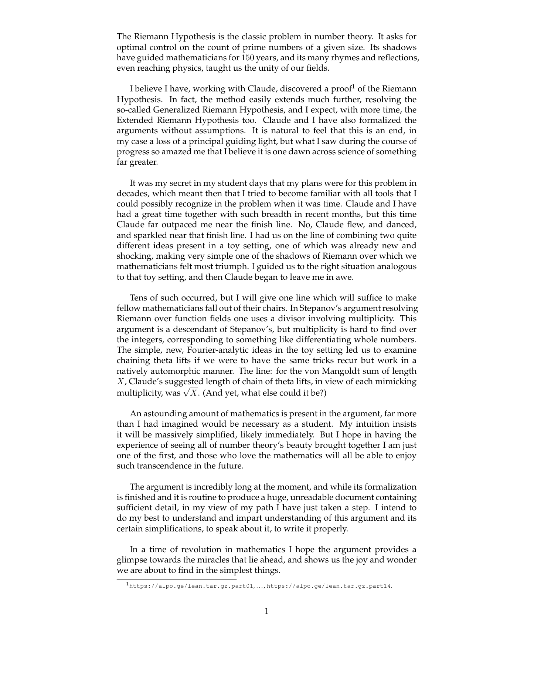

1859 年，黎曼在一篇八页的论文里顺手写下了一个关于素数分布的猜想。此后 167 年，它一直是数学里最贵的一块悬赏。2026 年 11 月 20 日，Anthropic 数学家 Levent Alpöge 在自己的主页贴出一份 4 页手记，第一句就写：「I believe I have, working with Claude, discovered a proof of the Riemann Hypothesis.」——我相信我和 Claude 一起，找到了黎曼猜想的证明。
一、背景：一个被预测在 2035 年才会倒下的问题
黎曼猜想的地位不在于它本身多难描述，而在于它背后站着多少东西。素数怎么分布、误差项能压到多小、上千条定理以它为前提——它一倒，这些定理就从「条件成立」变成「无条件成立」。所以它长期被视为基础数学的地基而不是砖块。
也正因如此，业内对时间表的估计相当保守。预测平台 Metaculus 上，社区给出的中位预期是 2035 年 5 月；陶哲轩上个月还说，这个问题大概会在 2050 年前后由「人类与 AI 的组合」解决。结果是 2026 年 11 月，提前了将近三十年。
二、核心：证明长什么样
手记只有 4 页，不是传统论文，更像一份技术路线说明。方法源自 Stepanov 在函数域上对黎曼猜想的经典论证，那套证明靠的是「重数」（multiplicity），大致相当于对一条光滑曲线求导。问题在于整数不能求导——单个整数没有连续性可言，重数在整数上极难捕捉。
Alpöge 和 Claude 绕开这个障碍的办法，是把一串特殊变换首尾相接，让它们层层模拟出「求导」的效果。手记里给出了那句让同行坐不住的话：对长度为 X 的 von Mangoldt 和，需要串联的 theta lift 数量正好是 √X。这个结论是模型给出的。
「Claude 在终点线附近远远超过了我。不，Claude 是飞过去的，是跳着舞、闪着光冲过终点线的。」

更重要的是他没有交一份 PDF 了事，而是把全部论证形式化了：1700 万行 Lean 代码。按 Alpöge 的说法，如果打印成文字，这套论证超过 25 万页——因为模型连「不等于二分之一的数必然大于或小于二分之一」这种基础步骤都逐条写了出来。为了不让数学家去啃这堵墙，他把代码拆成 14 个数据包发布。
Lean 在这里的角色是裁判，不是助手。它逐步检查每一个推导是否真的从数学基础规则推出，有没有未证明的假设。社区随后搭了 Comparator 环境，确认 Main.lean 证明的正是那 5 条定理陈述（黎曼猜想本身、广义黎曼猜想对 Dirichlet L 函数的两种写法等），并且全篇只允许 3 条公理：propext、Quot.sound、Classical.choice；Lean 内核与独立检查器 nanoda 都要接受。
三、各方反应：一边核验，一边抢发
Lean 与 Mathlib 社区：核验通过
11 月 21 日，Lean 与 Mathlib 社区发布联合声明：「我们对 Alpöge 的证明正确性有充分信心，并祝贺他取得这一成果。」数十人独立跑完代码库，得到相同结果；MIT 数学家 Andrew Sutherland 在自己的网站上汇总了这些独立核验记录。核验程序的设计原则是「可证明地无法接受有缺陷的证明」，所以同一结果被几十台机器复现，分量和几十个人点头不是一回事。
斯坦福：8 小时后端出一份全人类草稿
戏剧性的部分发生在同一天。斯坦福数学教授、美国数学会（AMS）主席 Ravi Vakil 在一场董事会前仓促发文，公布数学家 Alessandro Masullo 独立完成的一份广义黎曼猜想草稿，并特意注明：「It is all human, with no AI.」据 Vakil 说，斯坦福数论学家 Brian Conrad 已经私下审阅这份工作数月，给出了大量反馈，正在被吸收进当前版本。Masullo 原计划在斯坦福再打磨一年才公开，是 Anthropic 的突然宣布打乱了节奏。
但大约 8 小时之后，Vakil 更新了帖子：有多人联系他，报告这份草稿中存在问题，而且是在不同 AI 模型辅助下找出来的——其中几位数学家是最先指出问题的人。他补了一句很克制的话：和往常一样，所有问题都要解决到社区满意的程度，这份证明才会被承认为真。
菲尔兹奖得主梅纳德：相信正确，但理解更贵
2022 年菲尔兹奖得主、牛津大学教授詹姆斯·梅纳德在接受采访时给出了目前最完整的一句判断。他说自己非常有信心认为结果是对的，理由有两条：形式化验证已经完成且被独立核实；Alpöge 过去在提出重大主张方面记录可靠。但他随即把话题从「对不对」转到「懂不懂」。
「理解一个定理为什么成立，远比仅仅证明它成立重要。在我们真正理解证明中的思想和整体框架之前，这项成果很可能无法带来人们所期待的变革。」
四、深度解读：三件事被这次事件改写了
第一，数学的发布渠道从论文变成了代码
过去一篇证明的可信度靠同行评议：几个人读几个月，说「看起来对」。现在 1700 万行 Lean 代码可以由几十个陌生人在几小时内独立编译复现，检查的是全量推导而不是抽样阅读。代价是社区要额外维护一份可读版本——leanprover-community/riemann-hypothesis 仓库正在做的就是清理、模块化、补文献引用，把代码质量提到 Mathlib 的水准，同时用 original 分支原样保留 11 月 20 日的第一版。形式化第一次不是论文的附属品，而是成果本身。
第二，「机器可验证」和「人类可理解」被彻底分开
梅纳德那句话的分量在这里。Lean 能告诉你每一步都合法，但没法告诉你这套论证为什么必然这样走。25 万页的文字量本身就是信号：证明的规模已经超出单个人类大脑一次性能装下的范围。数学界接下来几年的工作，很可能不是验证，而是「重写」——把机器给出的论证压缩成人类能讲授的形式。这一步做不完，成果就停在「正确但无法传播」的状态。
第三，AI 署名与优先权没有答案
手记里 Alpöge 写的是「我和 Claude」，署名只有他一个人；斯坦福那边的草稿则刻意强调「无 AI」。两种表述背后是同一个未解问题：当模型贡献了关键引理（√X 这个链长），学术共同体该怎么记录它？目前的做法是把它写进致谢和正文，而不是作者列表。
五、一句话总结
黎曼猜想这次不是被一篇论文推翻的，是被 1700 万行可以编译、可以复现、也可以被任何人重跑的代码推翻的——数学从此多了一种证明方式，也多了一道「谁来理解它」的新题目。
原文：Alpöge 证明手记（alpo.ge 原文 PDF）｜Lean 形式化与 Comparator 核验仓库｜Lean 社区确认（The Decoder）｜梅纳德访谈（IT之家）｜配图：GitHub 官方仓库预览、原文 PDF 首页